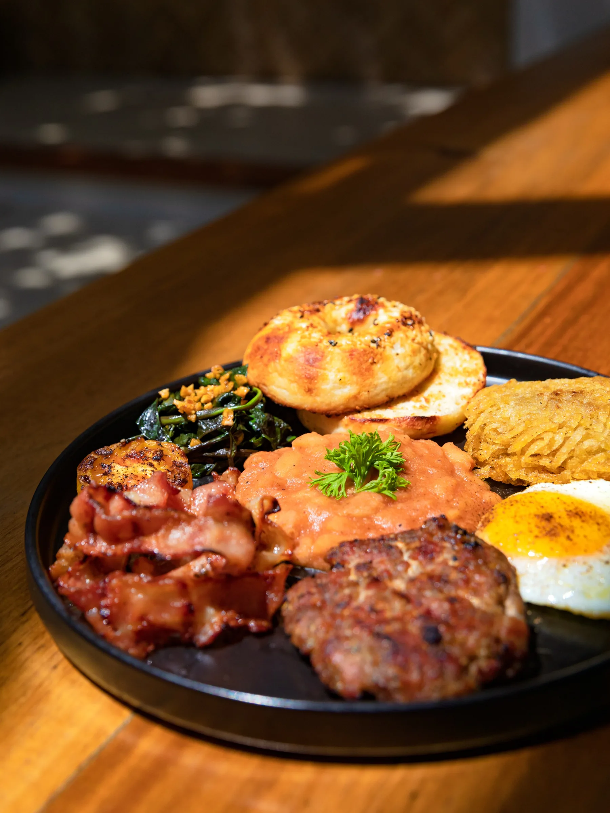

The menu
One list for drinks, coffee and juices and the kitchen. It makes the printed menu and the Menu page.
Menus & price lists holds the three menus of the house: Drinks, Coffee & juices and Kitchen, like the printed ones.
When you publish, the tool sets the PDF for the next printed menu, checks it word by word against your list and builds the Menu page of the website from the same list.
One list, two results
Publish runs five steps.
Bagels
Bagels
One list in Menus & price lists, two results.
Guides and lessons
1 guide, 1 ready.
What Menus & price lists can do
Every function, area by area. Open a drawer; its picture plays that part of the guide.
 Guide C · 1:09
Guide C · 1:09Menus & price lists
Here you keep the dishes, drinks and prices of The Cat & Gun. The same data makes the PDF for the printer and the menu page of the website.
01Three menusDrinks, Coffee & juices and Kitchen, with the pages, sections and order of the printed menu.4 functions
- The menus are on the left. On the right the chosen menu shows as it will be printed.
- On the phone the «Menu» button at the top right opens the side panel.
- One click on an item shows it in the list and in the menu at the same height, and it flashes briefly.
- The menu in the café is printed on boards. A change here is for the next printed menu and for the website. The boards stay as they are.
02Change an item («Simple»)Double-click or the pencil opens an item.4 functions
- The item has a name, marks (V, R), a price, a second price line where there are two (Bagel, Focaccia) and a description.
- «Show on the menu» is part of the item.
- Prices are written like on the menu: «260», «220/GLASS» or «240 | 260».
- On the right you see how it will look.
03Add, copy, move, hideEach item has its own buttons.5 functions
- Copy makes a new item in the same format.
- The eye hides an item for a while, the bin takes it away.
- The arrows change the order.
- «New item» and «Add item» add an item at the end of a section.
- «New section» adds a section.
04Menu or websiteA switch above the preview changes the view.3 functions
- «Menu» shows the menu as it will be printed.
- «Website» shows the menu page with your draft, the way a guest will see it after publishing.
- The «Website» view shows only the menu page.
05Design the menu («Advanced»)In «Advanced» you design right on the menu.5 functions
- One click picks a text, an item, the logo or the footer.
- Drag to move. The corners make a part bigger or smaller. It snaps to edges and centres, except with the Alt key held.
- «Design» opens on the right: font, size, text style (normal or capitals), colour, alignment, line spacing, space before and after.
- A double-click writes straight into the text.
- «Menu data» shows the pages of the menu as text.
06Draft, check, publishEvery change is a draft first. PDF and website change only when you publish.5 functions
- «Save» puts the change in the draft. «Undo» takes it back.
- Before, after shows each place on the left (today) and on the right (draft), new words marked.
- Test PDF prints the draft to look at.
- «Publish» prints the PDF, compares it word for word with the data, builds the menu page of the website and only then replaces the old version.
- While the website is not online, the new menu page waits in the tool, ready to go online.
07Earlier versions and logThe last versions stay in the tool.5 functions
- «Earlier versions» keeps every published menu.
- «Put in the draft» brings one back.
- «Original menu» is the menu as it was built.
- Until handover the log says «Team The Cat & Gun», without a login.
- After handover a login comes first: kitchen and service change the menus and print test PDFs, the manager publishes, brings back earlier versions and switches the website link.
08Keys and messagesShortcuts and keywords help with daily work.5 functions
- ⌘Z undoes, ⌘⇧Z or ⌘Y redoes, also text you wrote.
- ⌘S saves, also while writing in the menu.
- Arrow keys move the chosen part by 0.5 mm, with Shift by 5 mm. Delete hides the chosen part, Esc unselects.
- Every message carries a keyword, for example KONFLIKT, PASST or VERBINDUNG. The guide says what each one means.
- «Short tour» on the left under «Links» shows in four steps where things are.
Changing a price
A change on the menu goes this way:
Click the pencil next to the item. «Edit item» opens with name, marks and price.
Change what you need and save. The PDF and the website stay as they are.
«Test PDF» shows the printed menu with your draft.
Publish builds the PDF and the Menu page from the same list.
What you know now
Drinks, Coffee & juices and Kitchen are three menus.
One list makes the PDF and the Menu page.
«Advanced» changes fonts, sizes and spacing.
Every published menu is kept.